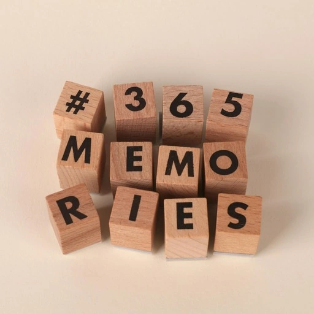
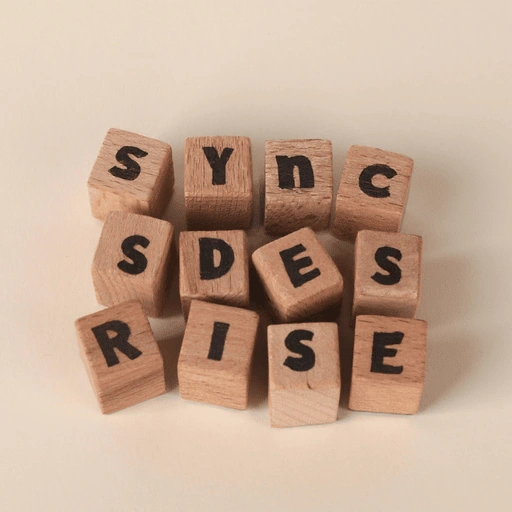
#365 Memories -> Sync SDEs Rise
Source A close-up photo of wooden letter blocks on a beige surface spelling #365 Memories.
Target A close-up photo of wooden letter blocks on a beige surface spelling Sync SDEs Rise.
ICML 2026 project page
sync-SDE is a training-free semantic editing method for out-of-the-box pretrained text-to-image models, requiring no editing-specific training or auxiliary network. It applies to models that admit SDE sampling, including diffusion/rectified flow models such as FLUX.1 and FLUX.2.
Citation
@inproceedings{zhang2026semantic,
title = {Semantic Editing with Coupled Stochastic Differential Equations},
author = {Zhang, Jianxin and Scott, Clayton},
booktitle = {Proceedings of the 43rd International Conference on Machine Learning},
year = {2026},
url = {https://arxiv.org/abs/2509.24223}
}Editing gallery
Source and edited images are shown side by side. The method changes the requested semantics while leaving surrounding structure intact.


Source A close-up photo of wooden letter blocks on a beige surface spelling #365 Memories.
Target A close-up photo of wooden letter blocks on a beige surface spelling Sync SDEs Rise.
Source A latte with latte art in a black cup on a saucer, served with a glass of water and a spoon on a wooden tray, next to a digital clock display reading 09 02 11.
Target A latte with latte art in a black cup on a saucer, served with a glass of water and a spoon on a wooden tray, next to a digital clock display reading IC LR 26.
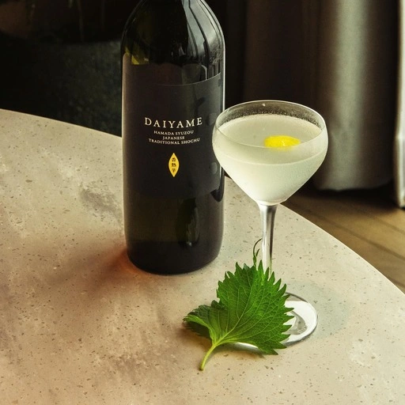
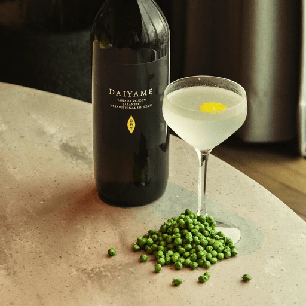
Source A green beverage beside a bottle on a table, with a small pile of fresh leaves in front of the glass.
Target A green beverage beside a bottle on a table, with a small pile of fresh peas in front of the glass.
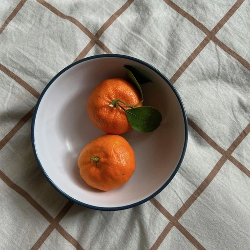
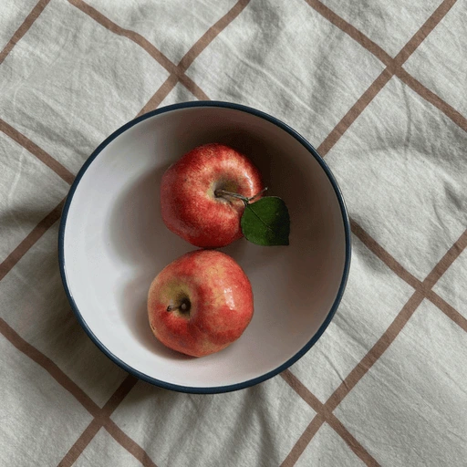
Source Top-down photo of a white bowl on patterned cloth containing two oranges with leaves.
Target Top-down photo of a white bowl on patterned cloth containing two apples with leaves.
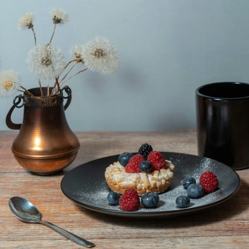
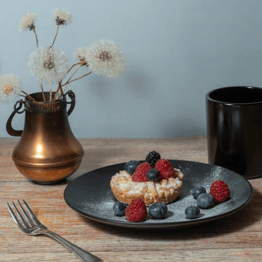
Source A dessert with berries and blueberries on a plate next to a black cup, a copper vase of dandelions, and a spoon, on the side of a wooden table with a gray wall.
Target A dessert with berries and blueberries on a plate next to a black cup, a copper vase of dandelions, and a fork, on the side of a wooden table with a gray wall.
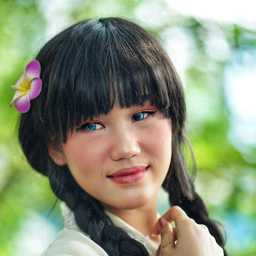
Source A close-up portrait of a woman with long dark braided hair, wearing a white top, with a purple and yellow plumeria flower tucked in her hair.
Target A close-up portrait of a woman with a pair of glasses and long dark braided hair, wearing a white top, with a purple and yellow plumeria flower tucked in her hair.
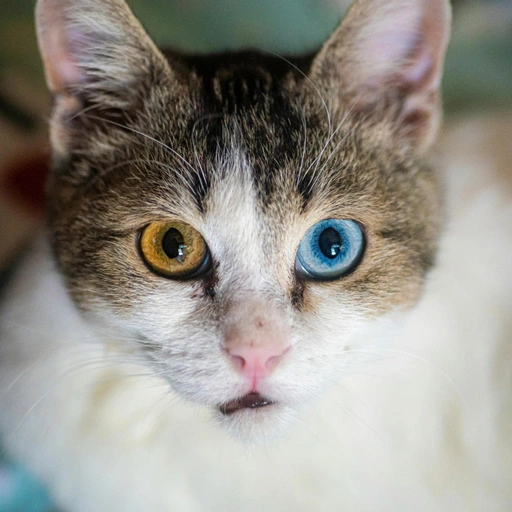
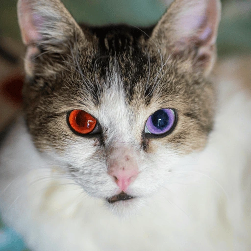
Source Close-up portrait of a cat with one yellow eye and one blue eye.
Target Close-up portrait of a cat with one red eye and one purple eye.
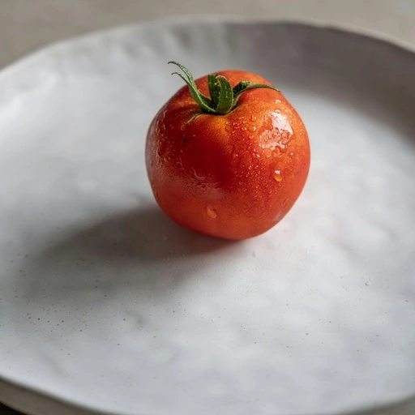
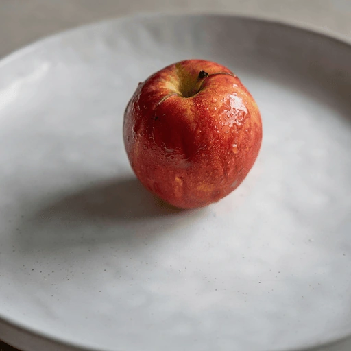
Source A single ripe tomato sitting on a white plate under soft studio light.
Target A single ripe apple sitting on a white plate under soft studio light.
Source A white sculpture of two hands with blue flowers and the word PEACE printed on the base.
Target A white sculpture of two hands with blue flowers and the word ICLR printed on the base.
Source An overhead view of many identical white vans arranged in neat rows.
Target An overhead view of many identical white iPhones arranged in neat rows.
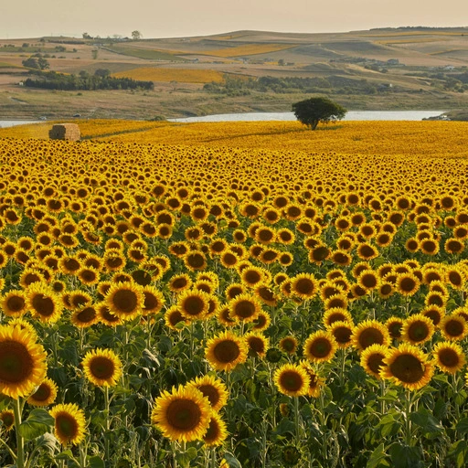
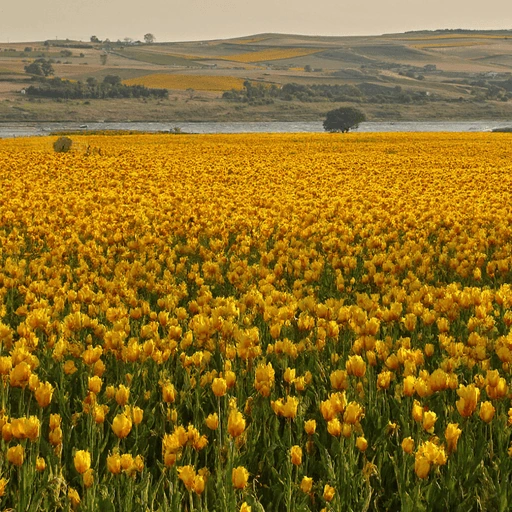
Source A wide landscape photograph of a large field of sunflowers under warm daylight.
Target A wide landscape photograph of a large field of tulips under warm daylight.
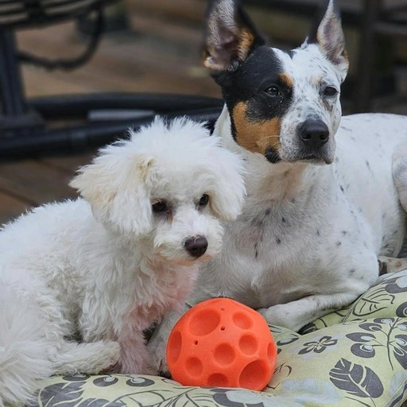
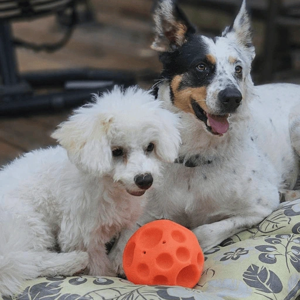
Source A photo of two dogs resting on a patterned cushion beside an orange ball.
Target A photo of two dogs laughing happily on a patterned cushion beside an orange ball.
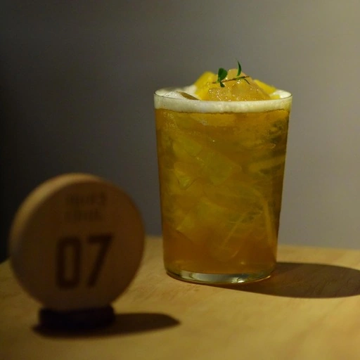
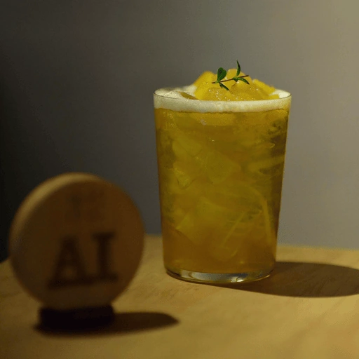
Source A cinematic close-up of a yellow drink in a glass beside a round token marked 07, under warm low-key lighting.
Target A cinematic close-up of a yellow drink in a glass beside a round token marked AI, under warm low-key lighting.
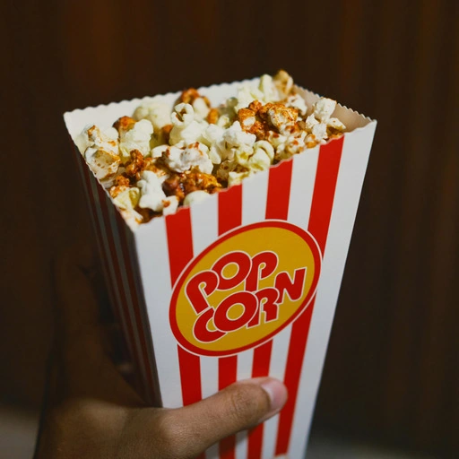
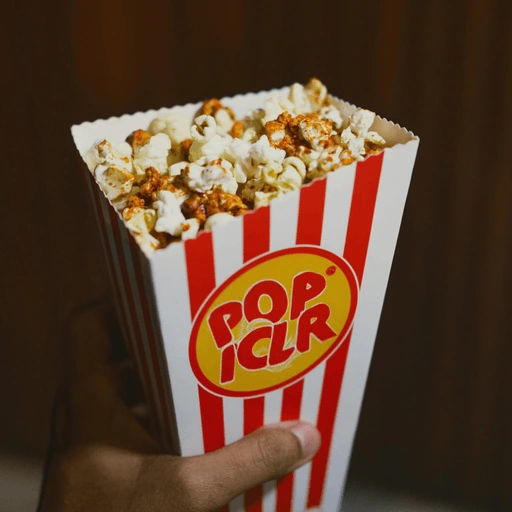
Source A hand holding a red-and-white striped popcorn bucket filled with popcorn, with the label Popcorn on the front.
Target A hand holding a red-and-white striped popcorn bucket filled with popcorn, with the label Pop ICLR on the front.
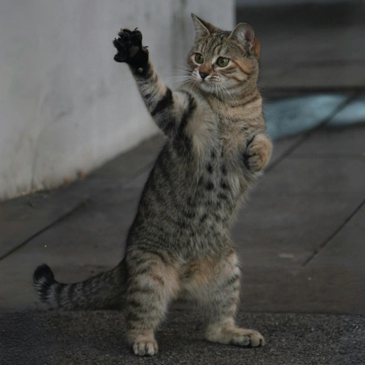
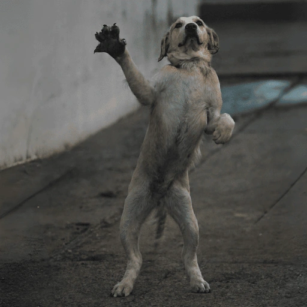
Source A gray tabby cat standing upright on its hind legs with one paw raised in an urban scene.
Target A small dog standing upright on its hind legs with one paw raised in an urban scene.
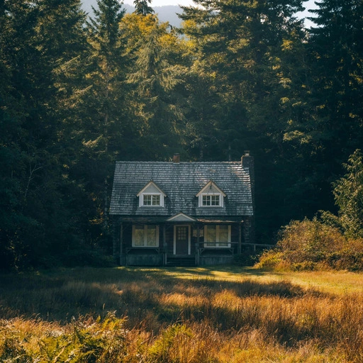
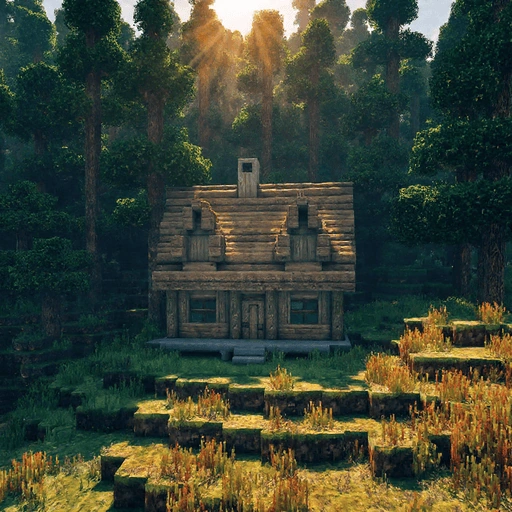
Source A moody photograph of a small house in a forest clearing, surrounded by trees and golden grass.
Target A Minecraft-style scene of a small house in a forest clearing, surrounded by trees and golden grass.
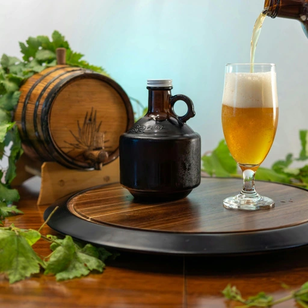
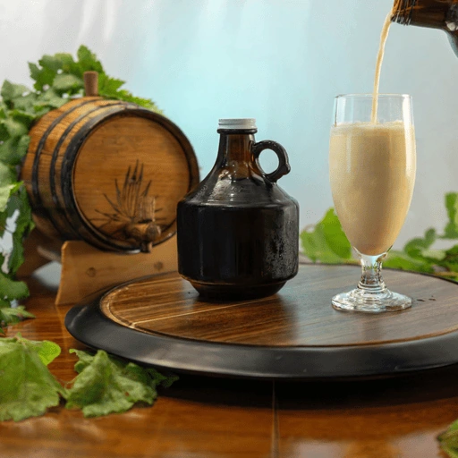
Source A tabletop still life with a wooden barrel, glassware, and a tall glass of golden beer.
Target A tabletop still life with a wooden barrel, glassware, and a tall glass of milk.
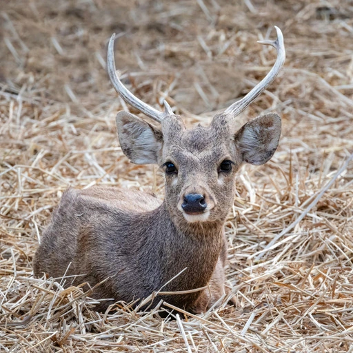
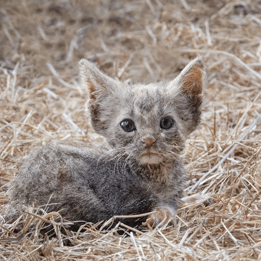
Source A young deer resting in dry grass, looking directly at the camera.
Target A young kitten resting in dry grass, looking directly at the camera.
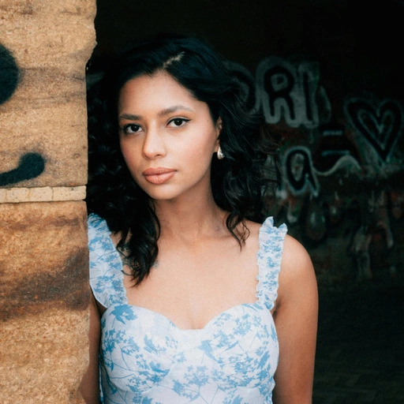
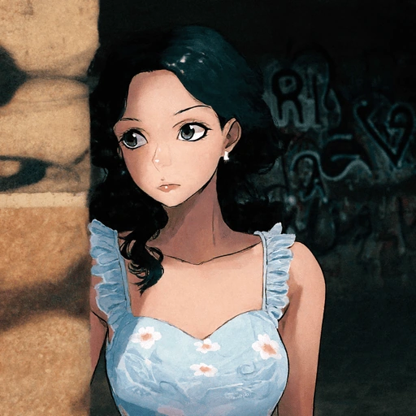
Source A portrait photo of a young woman in a light blue dress standing near a textured wall.
Target An anime scene of a young woman in a light blue dress standing near a textured wall.
Source A black and white portrait photo of a person with long hair wearing a hoodie.
Target A colored portrait photo of a person with long hair wearing a hoodie.
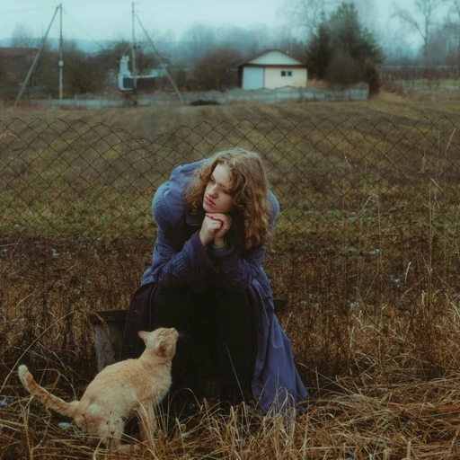
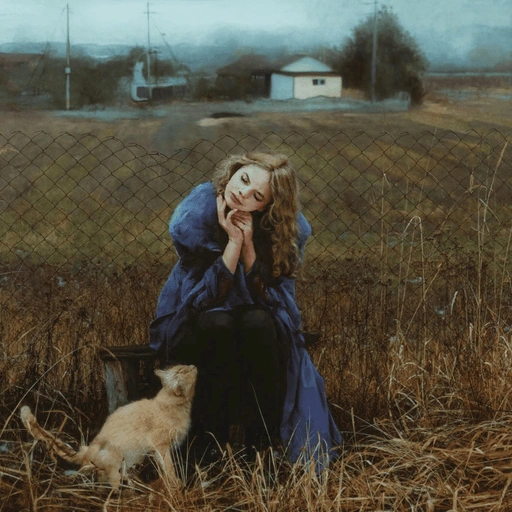
Source A photo of a woman sitting in a field with a dog beside her, rural background and muted light.
Target An oil painting of a woman sitting in a field with a dog beside her, rural background and muted light.
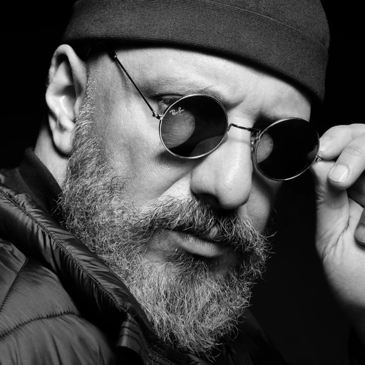
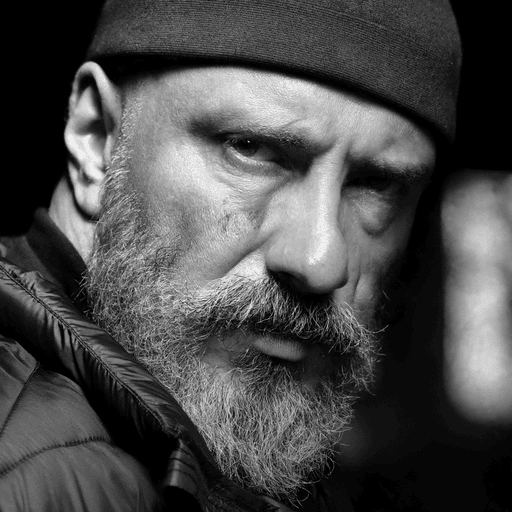
Source Black and white close-up portrait of an older man with a thick beard and mustache, wearing round Ray-Ban sunglasses and a dark beanie. He adjusts the glasses with one hand, looking directly into the camera with an intense expression. Dramatic studio lighting highlights the textures of his beard and skin, creating a bold, cinematic style photograph.
Target Black and white close-up portrait of an older man with a thick beard and mustache, wearing a dark beanie. He is looking directly into the camera with an intense expression. Dramatic studio lighting highlights the textures of his beard and skin, creating a bold, cinematic style photograph.
Negative sunglasses
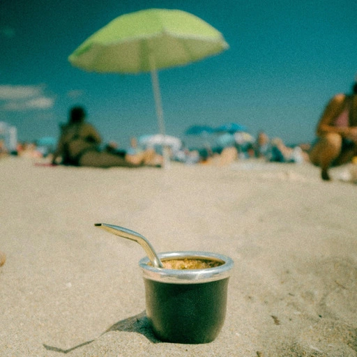
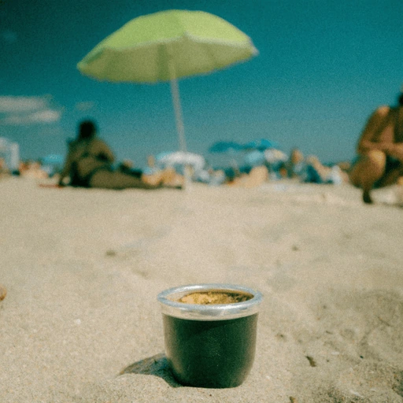
Source Close-up of a traditional mate cup with metal straw placed on sandy beach, photographed with shallow depth of field. In the blurred background, a green sun umbrella stands tall, with beachgoers relaxing under the bright blue sky. Warm daylight and grainy cinematic texture create a nostalgic summer atmosphere, vivid yet softly muted colors.
Target Close-up of a traditional mate cup placed on sandy beach, photographed with shallow depth of field. In the blurred background, a green sun umbrella stands tall, with beachgoers relaxing under the bright blue sky. Warm daylight and grainy cinematic texture create a nostalgic summer atmosphere, vivid yet softly muted colors.
Negative straw
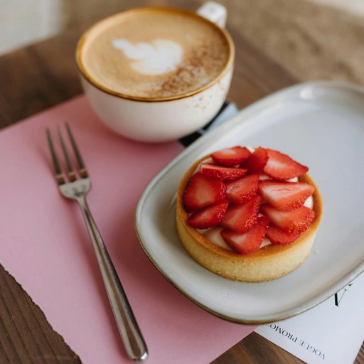
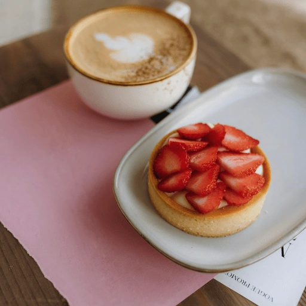
Source Close-up of a dessert and coffee on a wooden cafe table. A small tart topped with fresh sliced strawberries sits on a white rectangular plate, placed beside a fork. Next to it is a white cup of cappuccino with leaf-shaped latte art. A pink paper mat and part of a magazine page peek from beneath, creating a cozy, minimalist cafe atmosphere, high detail.
Target Close-up of a dessert and coffee on a wooden cafe table. A small tart topped with fresh sliced strawberries sits on a white rectangular plate, placed beside a fork. Next to it is a white cup of cappuccino with leaf-shaped latte art. A pink paper mat and part of a magazine page peek from beneath, creating a cozy, minimalist cafe atmosphere, high detail.
Negative fork
Method
Instead of adding an auxiliary network or optimizing at test time, sync-SDE synchronizes the stochastic fluctuations of source and target reverse processes. The target prompt then changes the drift while the shared noise path keeps the sample close to the source.
Evolve the source image through a forward SDE to obtain a structured noisy state and the associated Brownian increments.
Construct the backward Brownian path implied by time reversal and the source prompt score.
Drive the target reverse SDE with that same path, changing only the semantic drift induced by the target prompt.
Demo
The public Hugging Face Space exposes the Gradio demo for quick source-image editing experiments.